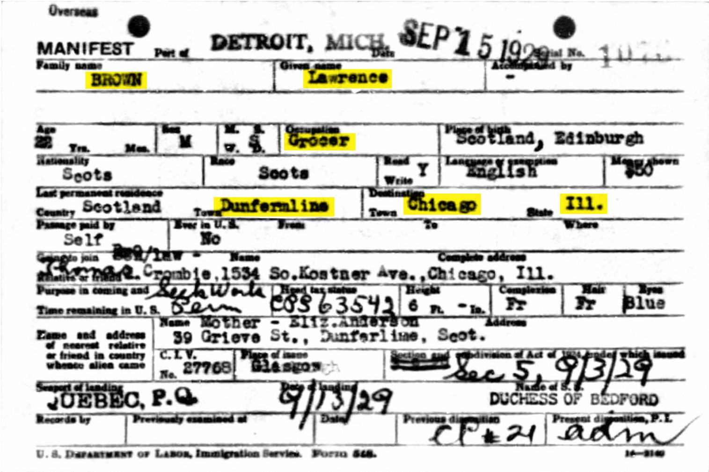
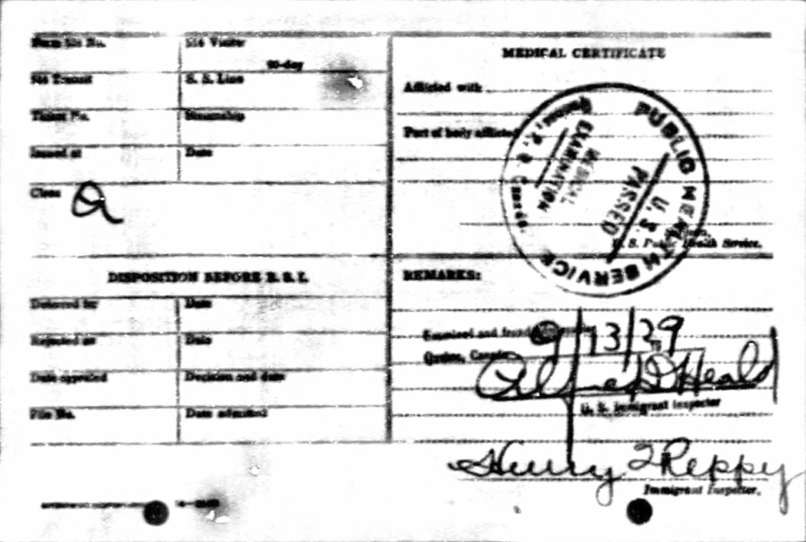

The Names He Carried · Academic Edition
Doug Garceau, comp., “Border crossing card: Lawrence Brown, Detroit,” DOC-037, The Names He Carried: Academic Edition (https://douggarceau.com/the-names-he-carried/archive/items/doc-037.html : accessed [date]); original: U.S. Immigration Service, Form 548, Detroit. U.S. National Archives, M1478, roll 8, image 3914.


This copy carries yellow highlighting or red outlining added for the book site. It is not on the original.
The second image is another side of the same document.
Tap an image to open it full size.
Everything as written, including misspellings. [?] marks an uncertain reading. Struck-through words are marked as struck through. Notes in square brackets describe the page and are not part of it.
[Printed] Overseas MANIFEST Port of DETROIT, MICH. Date [stamped] SEP 15 1929. Serial No. [stamped, faint] 10[?]... Family name: BROWN. Given name: Lawrence. Accompanied by: – Age: 22 Yrs. – Mos. Sex: M. M. S. W. D.: [S marked]. Occupation: Grocer. Place of birth: Scotland, Edinburgh Nationality: Scots. Race: Scots. Read: Y. Write: [blank]. Language or exemption: English. Money shown: $50 Last permanent residence: Country Scotland. Town Dunfermline. Destination: Town Chicago. State Ill. Passage paid by: Self. Ever in U.S.: No. From: [blank]. To: [blank]. Where: [blank] Going to join (relative or friend): Bro/law – Name: Thomas[handwritten over typing] Crombie, Complete address: 1534 So.Kostner Ave.,Chicago, Ill. Purpose in coming and time remaining in U.S.: Seek Work [handwritten]. Perm [handwritten]. Head tax status: C88 63543[?] [handwritten]. Height: 6 ft. – In. Complexion: Fr. Hair: Fr. Eyes: Blue Name and address of nearest relative or friend in country whence alien came: Name Mother – Eliz.Anderson. Address 39 Grieve St., Dunferline[sic], Scot. C.I.V. No.: 27768. Place of issue: Glasgow. Section and subdivision of Act of 1924 under which issued: [handwritten] Sec 5, 9/3/29 Seaport of landing: QUEBEC, P.Q. Date of landing: [handwritten] 9/13/29. Name of S.S.: DUCHESS OF BEDFORD Records by: [blank]. Previously examined at: [blank]. Date: [blank]. Previous disposition: [handwritten] CP #21. Present disposition, P.I.: [handwritten] adm [Printed, bottom] U. S. Department of Labor, Immigration Service. Form 548. 14—2140 [BACK OF CARD — second image] [Left side, printed headings] Return 514 No. [?] | 514 Visitor [blank] | [printed or stamped] 90-day 514 Transit [blank] | S. S. Line [blank] Ticket No. [blank] | Steamship [blank] Issued at [blank] | Date [blank] Class: [handwritten, large] Q DISPOSITION BEFORE B. S. I. Deferred for [blank] | Date [blank] Rejected as [blank] | Date [blank] Date appealed [blank] | Decision and date [blank] File No. [blank] | Date admitted [blank] [Bottom left: a printed form number, illegible; two round black punch holes] [Right side] MEDICAL CERTIFICATE Afflicted with [blank] Part of body affected [blank] [Round stamp across this section, in a circle:] PUBLIC HEALTH SERVICE · U.S. · PASSED · MEDICAL EXAMINATION · Quebec, P.Q. [?] Canada [?] [Below the stamp, printed] ______ Surgeon, U.S. Public Health Service. REMARKS: [Printed or stamped] Examined and found [?] ... Quebec, Canada [rest of wording covered by the date] [Handwritten] 9/13/29 [Signature, large] Alfred [?] ... Heald [?] [Printed] U. S. Immigrant Inspector. [Signature] Henry [?] Reppy [?] [Printed] Immigrant Inspector. [Marks on the card: a dark grey smudge near the top of the left section, beside "90-day"; a second grey smudge at the bottom left beside the form number; small white flecks (scratches on the film). No fingerprint can be identified on this copy.]